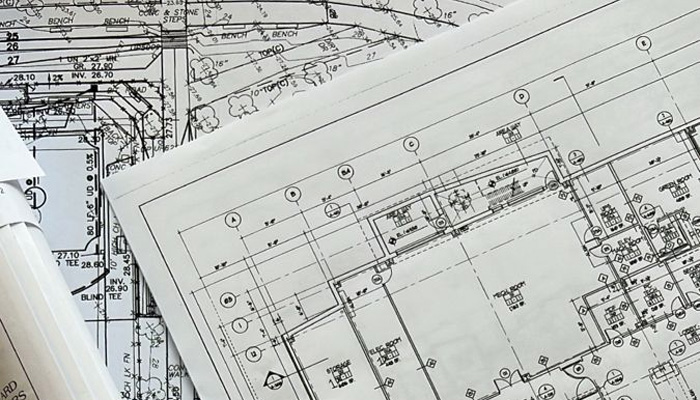
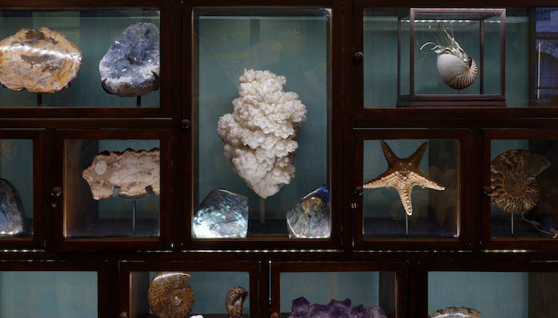
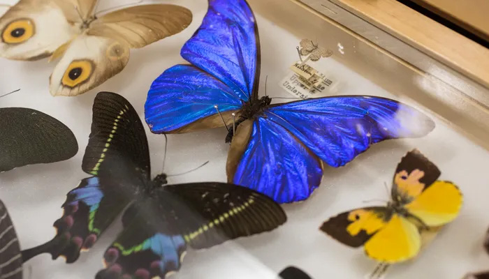

Home > 박물관 소개 > 소개
소개
국내 최초로 설립된 자연사박물관을 만나보세요.
-

- 설립배경
- # 1969년 국내 최초의 자연사 박물관 설립
- 자연사박물관은 지각을 구성하고 있는 광물·암석·화석과 국내외 각지에 서식하고 있는 동물과 식물 등을 채집, 연구, 보존하고 자연사관련 학교 교육과 사회 교육에 이바지하기 위하여 1969년 국내에서 최초로 설립되었습니다. 당시에는 본교 생물과학·지구과학에 관련된 학과에 연구와 교육의 필요에 따라 수년간 수집·보관하였던 655종의 자료들을 진열하였습니다. 1973년 12월 미술관 4층에 140여 평의 전시실을 설치하였으며 1997년 5월 600여 평의 건물을 신축하여 최신 전시기법으로 전시 개관하였습니다.
-

- 소개
- # 국내 최고 수준의 전시
- 상설 전시실은 식물, 곤충, 무척추동물, 척추동물Ⅰ,Ⅱ, 지구과학의 6개의 코너가 있고 다양한 소 주제에 맞춰 표본 전시와 설명, 그림, 사진으로 구성되어 있으며 생태 환경을 재현한 4개의 소규모 디오라마 코너가 있습니다. 국내 최고 수준을 자랑하는 디오라마실에서는 우리나라 중부지방의 산, 습지, 해양 생태계를 만날 수 있으며 각종 동물과 다양한 식물상을 한눈에 볼 수 있습니다. 1-5층 계단 벽면은 수퍼그래픽을 이용하여 지구의 탄생, 생명의 기원부터 인류의 탄생에 이르기까지의 지구의 역사와 생명체의 진화과정을 단계적으로 보여줍니다. 또한 살아있는 생물을 직접 보며 생생하고 친근한 자연을 접할 수 있는 생태 전시 코너를 마련하여 생물들이 그 안에서 번식과 성장의 자연스런 순환 과정을 관찰할 수 있게 하였습니다. 상설 전시와 더불어 매년 분야별로 주제를 선정하여 폭 넓고 깊이 있는 특별 전시회를 열고 있습니다. 또한, 관련 도서와 연 4회의 자연사 소식지 발간을 하고 있습니다.
-
- 다양한 프로그램
- # 자연과 함께하는 흥미로운 교육들
- 에코과학연구소와 공동으로 다양한 교육프로그램을 개설하여 유치부, 초등학교 학생들과 일반인의 자연, 과학, 환경에 대한 교육을 실시하여 자연에 대한 이해와 관심을 높이고 있습니다. 또한, 서울특별시 교육청의 현장체험학습지정기관, 문화관광부 등록 1종 종합박물관, 학예사를 교육시킬 수 있는 경력인정대상기관으로 선정되어 전문 인력 양성에도 큰 힘을 쏟고 있습니다. 학생과 일반인의 참여를 위하여 자원 봉사제를 시행하고 있으며 소정의 연수교육을 수료한 후에 전시 설명 및 다양한 관련 업무를 수행할 수 있습니다.
-

- 소장 표본
- # 20만종이 넘는 다양한 표본
- 순수학술연구와 급격한 환경 변화에 따른 멸종 위기의 생물 파악과 기준 종 확보 등을 위하여 표본을 채집·교환·기증·구입·소장하고 있으며 천연기념물, 국제보호조, 특산종, 희귀종, 신종의 표본 등의 희귀한 표본을 다수 소장·전시하고 있습니다. 현재 표본 소장품은 총 218,546점입니다.